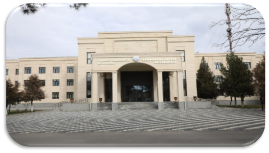
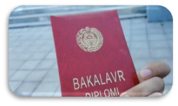

Fakultetda hozirda 5 ta bakalavriat, 6 ta magistratura va 4 ta doktorantura yo‘nalishlari bo‘yicha kadrlar tayyorlanadi. Fakultet tarkibida 4 ta kafedra, 4 ta zamonaviy ilmiy-amaliy laboratoriyalar (Sun’iy intellekt, Robototexnika, Kiberxavfsizlik, Matematik modellashtirish) hamda 1 ta IT-Innovatsion markaz faoliyat olib bormoqda.

Fakultetda ilm-fan, innovatsiya va ta’lim uyg‘unligini ta’minlash maqsadida Sun’iy intellekt laboratoriyasi, Kiberxavfsizlik laboratoriyasi, Matematik modellashtirish laboratoriyasi va Robototexnika laboratoriyalari faoliyat yuritadi.
Shuningdek, fakultet huzuridagi IT-Innovatsion markaz va “SamIT” xususiy korxonasi orqali talabalarning startap loyihalari qo‘llab-quvvatlanadi. Har oyda xakaton, dasturlash tanlovlari va “Bir million dasturchi” kabi loyihalar o‘tkazilib boriladi.
| № | Ism | Familliya | Guruhi |
|---|---|---|---|
| 1 | Azatbek | Ermalaev | 105-guruh |
| 2 | Shohrux | Ismatillayev | 105-guruh |
| 3 | Hakimbek | Baxitbaev | 105-guruh |
| 4 | Gulira'no | Berdimuradova | 105-guruh |
| 5 | Jasmina | Yo'ldosheva | 105-guruh |
| 6 | Muxlisa | Baxtiyarova | 105-guruh |